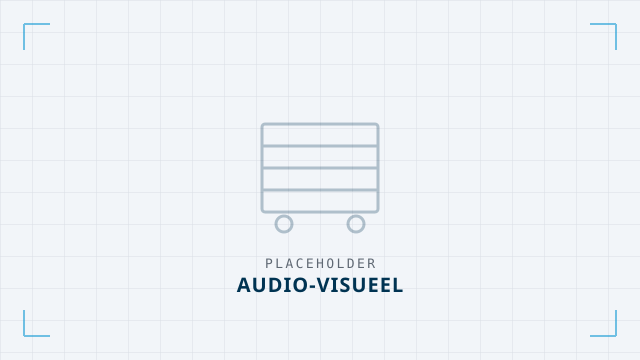
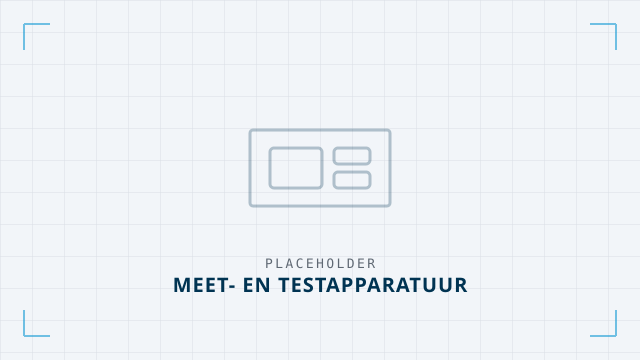
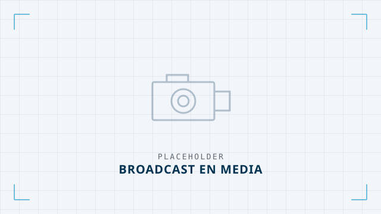
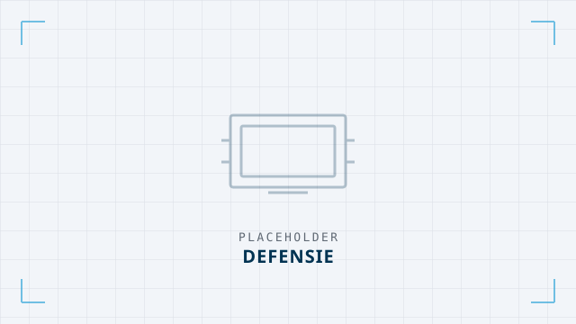
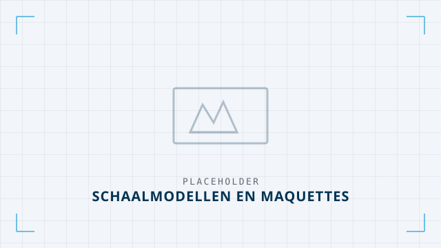

Per branche weten we welke eisen er gelden, welke keuringen erbij horen en wat er meestal naast in de bus gaat — en welke cases daar het vaakst uit komen.
 14 toepassingen
14 toepassingen
22 toepassingen
11 toepassingen
9 toepassingen
7 toepassingen
5 toepassingenAlles wat we maken is toch al maatwerk. De 533 cases hierboven zijn voorgevulde configuraties — jouw afwijkende maat is geen uitzondering, alleen een ander getal.
Zelf configureren →Twijfel je tussen twee modellen of heb je een raar formaat? Eén telefoontje is sneller dan een uur zoeken.
+31 (0)575 575734